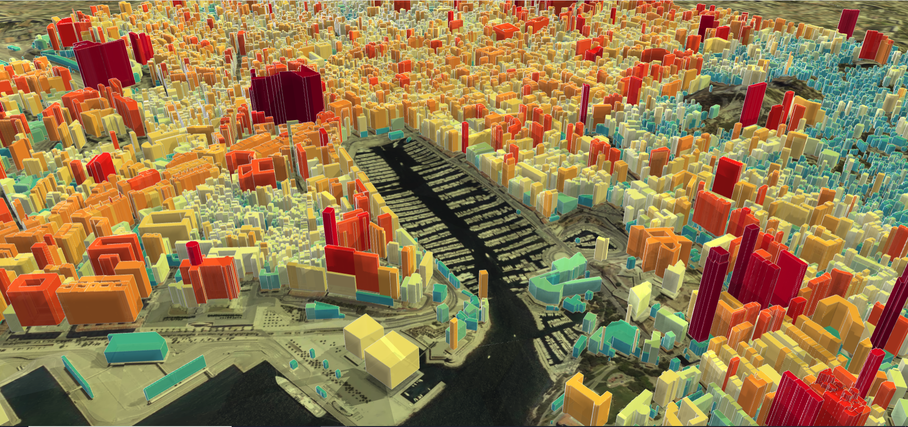

Expériences¶
Développeur SIG¶
Depuis Juin 2020
En tant que développeur SIG au sein de la start-up climatique Origins-Earth, dans le cadre de mon alternance de Master en Géomatique, j’ai eu l’opportunité de participer activement aux projets suivants :
1. Développement d’un module de calcul et spatialisation des émissions de GES du transport aérien¶
La réalisation de ce projet a nécessité la compréhension du fonctionnement des moteurs aéronautiques, des caractéristiques techniques des types de moteurs et d’aéronefs, l’identification et l’exploitation de bases de données d’accès public liées au trafic aérien, la localisation des pistes aéroportuaires et la spatialisation des trajectoires en 3D.
💡 Pour ce projet, j’ai dirigé aussi l’installation et le paramétrage d’un récepteur de signal ADS-B, qui alimente le module de calcul avec des informations sur le trafic aérien.
| Produits | Langages | Logiciels et Librairies |
|---|---|---|
| Conception, construction et gestion de la base de données | PostgreSQL PostGIS |
pgAdmin |
| Développement : La construction du module est basée sur du Python pur au sein d'un environnement de développement industriel, avec des modules spécialisés dans la capture et le traitement de données spatiales, la connexion à des bases de données sur des serveurs distants et locaux, et la production d'informations spatiales dans des formats adaptés à la visualisation comme GeoJSON, SHP, KML et des formats multidimensionnels comme NetCDF. |
Python Git |
VSC Pandas GeoPandas Psicopg PyTest SQLALchemy Numpy Beautiful Soup Fuzzy |

2. Spatialisation des émissions de CO2 et de CH4 à partir du rapport annuel des émissions de GES à Chypre¶
Conception d’une méthodologie permettant de répartir les émissions de GES à partir d’informations spatiales et non spatiales, produites par des entités publiques et des informations open source.
| Produits | Langages | Logiciels et Librairies |
|---|---|---|
| - Conception de la methodologie de traitement des données spatiales et automatisation des geoprocessus. - Traitement des données au format NetCDF, SHP, GeoJSON, consultation de la base de données Open Street Map. - Rédaction de rapports explicatifs des méthodologies proposées |
Python ArcPy PyQgis GIT |
QGIS ArcGIS Pro VSC |
3. Présentation des données spatiales¶
Représentation de données spatiales sous forme de cartes statiques et interactives.
| Produits | Langages | Logiciels et Librairies/Frameworks |
|---|---|---|
| Cartes 3D interactives et Cartes 2D | JS HTML CSS PHP Node.js Python |
DeckGL p5.js Mappa.js Turf.js Leaflet JS Folium Blender GIS Google Earth Studio ArcGIS Pro QGIS VSC |

⚠️ Valeurs produites au hasard avec le seul l’objectif de générer un produit visuel
Ingénieur Cadastral¶
Septembre 2018 - Semptembre 2019
En tant qu’ingénieur, j’ai travaillé au sein de la société d’expertise cadastrale APRA, où j’ai participé à des projets liés au calcul de la valeur des biens immobiliers, suivant les méthodes de comparaison du marché, la méthode de revenu ou de capitalisation du revenu, la méthode du coût de remplacement et la méthode résiduelle.
De plus, j’ai participé à la mise à jour de la base de données cadastrale et à la proposition de modèles économétriques pour déterminer la valeur de la taxe foncière de la ville de Cali en Colombie, avec une population de 2,3 millions d’habitants.
Enfin, j’ai mené un projet d’évaluation d’habitations dans des zones exposées à un risque de glissement de terrain dans la cordillère orientale de la ville de Bogota, en Colombie, dans le cadre d’un plan de relogement de familles.
Développeur d’applications avec ArcGIS Web AppBuilder¶
Octobre 2017 - June 2018
Au sein de la Direction Générale Maritime de Colombie, j’ai effectué mon stage d’ingénieur ; j’ai participé à la création d’applications pour le service maritime en utilisant principalement les produits ArcGIS Enterprise, en particullier ArcGIS WebAppBuilder et ArcGIS Dashboards.
👓 Au fait, ici se trouve l’un des produits récemment réalisés avec deux talentueuses camarades de classe à l’aide des outils ArcGIS, dans le cadre d’un de mes cours du Master en géomatique.